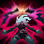
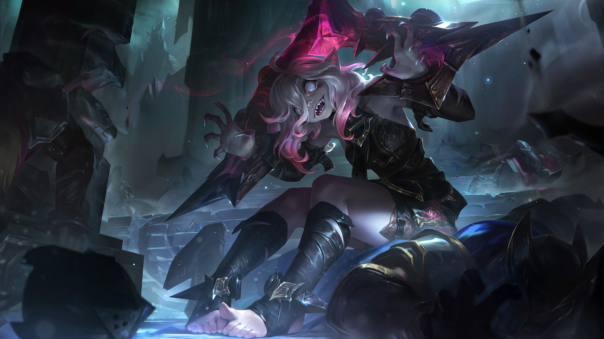

THE RESTRAINED HUNGER
BRIAR

ROLE
FIGHTER
DIFFICULTY
LOW
A failed experiment by the Black Rose, Briar's uncontrollable bloodlust required a special pillory to focus her frenzied mind. After years of confinement, this living weapon broke free from her restraints and unleashed herself into the world. Now she's controlled by no one—following only her hunger for knowledge and blood—and relishes the opportunities to let loose, even if reining back the frenzy isn't easy.
PASSIVE
CRIMSON CURSE
Briar's attacks and abilities apply a stacking bleed that heals her for a portion of the damage it deals. Perpetually hungry, she gains increased healing based on her missing Health, but lacks innate Health Regeneration.
Q
HEAD RUSH
Briar leaps to a unit and hits enemies with The Heel Wheel (of Pain), stunning them and breaking their Armor.
W
BLOOD FRENZY / SNACK ATTACK
Briar leaps forward and shatters her pillory, entering a Blood Frenzy that causes her to relentlessly pursue the nearest enemy (prioritizing champions). While frenzied, she gains increased Attack Speed and Move Speed, and her attacks deal damage in an area around her target. Briar can reactivate this ability while frenzied to take a CHOMP out of her target on her next attack, dealing additional damage based on their missing Health, and healing Briar based on the damage she deals.

E
CHILLING SCREAM
Briar refocuses her mind, removing Blood Frenzy and channeling energy into a powerful scream that damages and slows enemies. While charging, she takes reduced damage and heals for a portion of her max Health. A fully charged scream knocks foes back, dealing additional damage and stunning those who collide with a wall.
R
CERTAIN DEATH
Briar kicks her pillory's hemolith gemstone, marking the first champion it hits as her prey. She then beelines straight to them, fearing other surrounding enemies upon arriving at her target, and enters a state of complete hemomania. She will pursue her prey until death, gaining the benefits of Blood Frenzy as well as additional Armor, Magic Resistance, Life Steal, and Move Speed.
AVAILABLE SKINS
